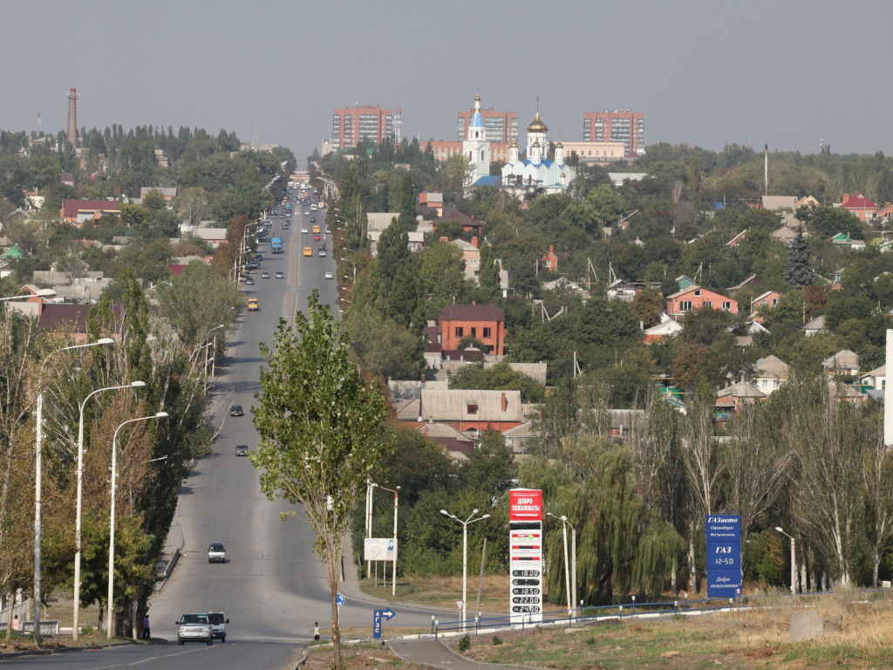

Ша́хты — город в Ростовской области России. Образует городской округ. Промышленный и образовательный центр. Имеет статус опорного центра Восточно-Донбасской агломерации. В 2011 году с образованием Шахтинской епархии стал культурно-православным центром региона Восточный Донбасс. В городе воспитаны девять олимпийских чемпионов и один чемпион Паралимпийских игр. Население — 226 452 чел. (2021). Площадь городской территории составляет в общей сложности 16 065,3 га. Плотность населения — 1574 чел./км². Второй город области по площади, третий по численности населения, четвёртый по объёму промышленного производства после соответственно Ростова-на-Дону, Таганрога, Новочеркасска.
